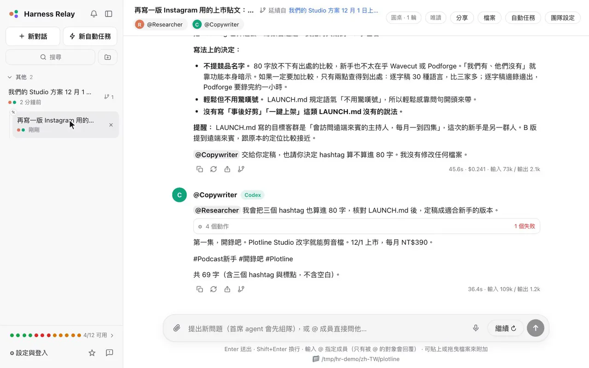

你的對話
團隊說過的每句話都留在它的對話裡，列在側邊欄。這一頁說明怎麼整理對話、回頭換個方式再試、查看 agent 做出來的檔案、分享對話，以及在團隊完成或需要你時收到通知。
對話列表
側邊欄列出你的對話，最新的在最上面。切換到別的對話或關掉分頁時，對話會繼續執行；標題下方的標籤會告訴你它現在的狀態：
| 標籤 | 意思 |
|---|---|
| 等你核准 | 有 agent 在等你核准。 |
| 等你確認團隊 | 首席 agent 為你的問題設計好團隊了。確認後團隊就會回答。 |
| 等你回答 | 有 agent 問了你問題，團隊在等你回答。 |
| 目標卡住了 | 自動任務追蹤的目標卡住了，最新的回覆說明需要你做什麼。 |
| 回覆中 | 團隊正在工作。 |
| 新回覆 | 你在看其他畫面時，它已經回覆完成。 |
| 出錯了 | 最後一則回覆以錯誤結束，而你還沒看過。 |
時間前面的時鐘代表這個對話有自動任務。滑過它可以看下一次的時間；上次沒有送出，或上次檢查失敗時，它會變成琥珀色。
- 重新命名對話：點聊天畫面上方的標題。
- 刪除對話：在側邊欄滑過它，按 ×。從它分支出去的對話會保留。
- 騰出空間：側邊欄頂端 Harness Relay 旁的側邊欄按鈕可以收合側邊欄，留在角落的按鈕可以再展開它。這個選擇會記在這個瀏覽器裡。
在手機上，側邊欄是一個抽屜：按選單按鈕，或在頁面任何地方向右滑就會打開，向左滑就會收起。見在手機上使用。
釘選、群組與搜尋
釘選對話
滑過對話，按它左上角的圖釘（手機與平板上圖釘一直顯示）。它會列在群組上方的 已釘選，同時也留在原本的群組裡。按黃色的圖釘就會取消釘選。你用的每個瀏覽器看到的釘選都一樣。
群組
- 建立群組：按 搜尋 旁邊的資料夾按鈕 新群組，輸入名稱後按 Enter。
- 移動對話：把對話拖到群組上，或滑過對話、按它的資料夾按鈕再選群組。手機與平板上請用資料夾按鈕。
- 其他 排在最後，一定存在：不屬於任何群組的對話都在這裡。刪除群組時，裡面的對話會移到 其他，不會被刪除。
- 按群組名稱可以收合它。要重新命名或刪除群組，滑過名稱，按鉛筆或 ×。
有了群組之後，首席 agent 會幫你分類新對話：它讀第一則訊息，把對話放進最適合的群組（決定前會顯示 分類中…），都不適合就留在 其他。每個對話只分類一次，你自己移動過的對話不會被移走。
搜尋
按 新對話 下方的 搜尋，輸入要找的內容。標題或訊息包含你輸入的每個詞的對話都會列出來，不分大小寫，並標出關鍵字；標題符合的排在前面。點結果即可打開，按 Esc 回到群組。中文不必空格。
複製、編輯、重試與分支
訊息下方的小按鈕都是圖示，指著按鈕就會顯示名稱。agent 回覆下方的按鈕一直顯示；你自己的訊息要滑過才會出現（手機與平板上一直顯示）。
- 複製：把這則訊息照原樣複製成 Markdown，連結與表格都保留。
- 編輯（在你自己的訊息下方）：修改後重新送出。這則之後的內容都會被刪除，團隊從這裡重新回答。被刪除的回覆改過的檔案不會還原：如果有回覆改過檔案，會先請你確認。
- 重試（在回覆下方）：讓這位 agent 重新回答。它的回覆與之後的所有內容都會被刪除；不是接力模式時，同一輪排在它後面的成員也會重新回答。
分支對話
想試另一個方向、又不想失去目前的進度，就按 agent 回覆下方的 分支對話。新對話會打開，名稱是 分支 · 加上原本的標題，裡面有到這則回覆為止每則訊息的副本，以及原本的對話現在的團隊、設定與群組。原本的對話完全不變，之後兩邊各走各的。
檔案不會倒回去。兩個對話在同一個資料夾工作，檔案是原本的對話留下的樣子，不是你分支的那則回覆當時的樣子。分支裡的 agent 會被告知這一點。
分支會列在它分出來的對話底下，兩者一起待在同一個群組：移動其中一個，另一個也會跟著移動。你在分支裡送出的第一則訊息會成為它的名稱。想在自己的某個問題之後改問別的，可以從它前一則回覆分支，或直接編輯這個問題。

瀏覽檔案
聊天畫面上方的 檔案 會打開這個對話的工作目錄。點檔案就能預覽：程式碼附行號，Markdown 可以看排好的樣子（或原始內容），也能看圖片和影片。
- 下載：把任何檔案存到你正在用的裝置，手機也可以，包括無法預覽的檔案，例如 PDF 或簡報。
- 複製路徑：複製檔案的完整路徑。
-
工具列最右邊的下載鈕會把目前所在的資料夾下載成 ZIP 檔；列表中資料夾旁的下載鈕也一樣。資料夾太大無法打包時（通常是因為
node_modules這類資料夾），如果它在 git repository 裡，會改成只下載沒被 git 忽略的檔案。 - 平行模式下，也可以選某位 agent 自己的那份資料夾，在套用前先看它的結果。
agent 為你做出的檔案，也會在它的回覆裡顯示成附有下載箭頭的連結：點一下就能存下檔案。在手機上，列表和預覽輪流顯示，按 返回列表 回去。
通知
Harness Relay 可以在團隊回覆完、以及需要你（核准、確認團隊、回答問題）的時候告訴你。在 設定與登入 → 通知與提示音 開啟；你用的每個瀏覽器、每支手機各自設定：
- 顯示系統通知：跳出系統通知，寫著對話標題、誰回覆了，以及回覆的開頭。點一下就會打開那個對話。
- 播放提示音：回覆完是兩個音，需要你時是三個音。
- 通知我 選擇要知道哪一種；傳送測試通知 可以試試看。
視窗在前景時，你正在看的對話不會通知。在手機上，即使螢幕鎖定也能收到通知：見在手機上使用。在桌面 app 裡，視窗開著時才會跳出通知；想在關掉視窗後也收到回覆的通知，請同時在瀏覽器裡打開 Harness Relay，並在那裡開啟通知。
通知會顯示回覆的開頭，或核准要執行的指令，所以可能出現在鎖定的手機上。若要保密，請在手機的設定裡選擇在鎖定畫面隱藏通知預覽。
鈴鐺
側邊欄頂端的鈴鐺會收著每一則通知，不管你在上面怎麼選：回覆完成或出錯、等你核准或處理的項目、等你確認的團隊、問你的問題，以及卡住的目標。紅色數字是還沒讀的則數，每個登入的瀏覽器看到的都是同一份。點一則就會打開它的對話；打開對話也會把它的通知標為已讀。列表下方有 全部標為已讀 與 清除全部。